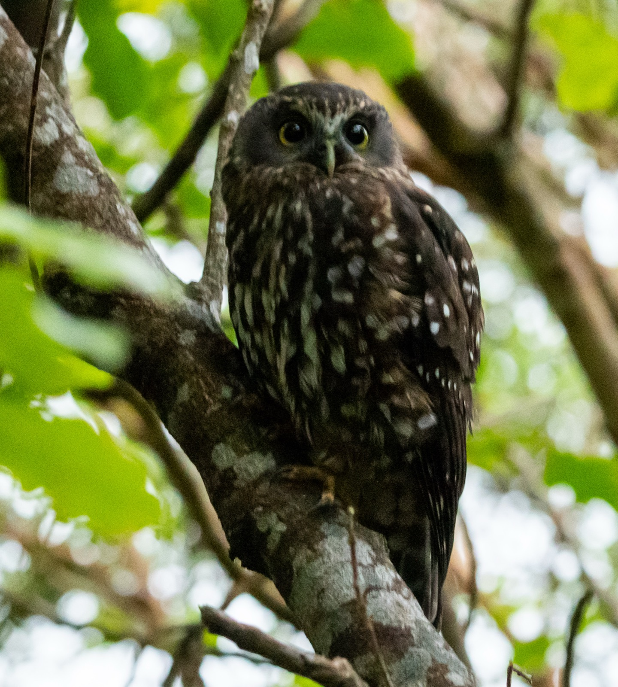

The idea behind this project was to simply document the birdlife in our garden at home in Wellington. And it turns out there was more to see than we ever appreciated.
There is nothing exceptional about our home on Ariki Road. It is typical of many Wellington homes nestled on the side of the hill. It has a short walk-up to the house with a small smattering of native bush, and one stand-out kōwhai tree. It is not a lot of land but it’s enough to become our own mini sanctuary.

Birds are on the comeback in the Capital. Zealandia and the Wellington predator free initiative are paying dividends for our gardens. In the ten years we have been living in this house we have noticed a surge in bird life. This was the trigger to start documenting our feathered friends.

As the kaka flies, our home is close to the high ground in Zealandia, is tucked next to Mt Victoria (Maitairangi) and only a short flit to the Miramar Peninsular. We are a convenient stopping point within the golden triangle of predator free zones.
“We are a convenient stopping point within the golden triangle of predator free zones.”

Our favourites are the now ever-present kaka. However, the standout visitor award went to the ruru, who happily sat above our pathway one evening and greeted our return home.
